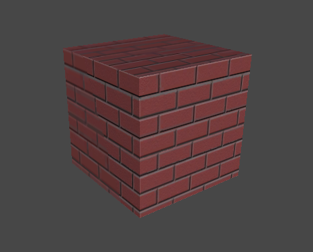
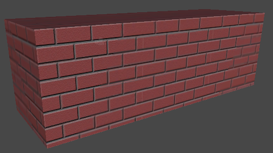
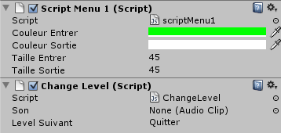

Nous allons commencer par mettre en place le mur du brique qui servira de fond. Créez donc un nouveau GameObject en forme de cube et assignez lui la texture de brique.

Augmentez sa taille sur l'axe X de sorte à former un pavé.

Nous allons maintenant créer une lumière en forme de cercle qui se trouve au centre du mur. Sélectionnez donc la lumière dans GameObject -> Create Other -> Spotlight.
Le Spotlight est l'équivalent à une lampe torche, idéal pour créer notre lumière en forme de cercle. ;)
Dirigez le ensuite vers le centre du mur. Pour l'intensité et l'angle de la lumière, n'hésitez pas à utiliser l'Inspector.
Une fois placé, votre scène devrait ressembler à celle-ci :
N'oubliez pas aussi de placer la caméra face au mur. ^^
Le décors étant fini, nous allons maintenant mettre en place le texte !
GUI Text
Nous allons maintenant nous attaquer au menu. Commençons par le titre. Tout d'abord, sélectionnez le police d'écriture Ascent 2 Stardom. Ensuite, nous allons créer un GUI Text. Pour se faire, ajouter en un en vous dirigeant dans le menu GameObject -> Create Other -> GUI text. Un texte devrait apparaître à l'écran avec la police d'écriture sélectionnée.
Mais c'est tout petit ! o_O
Deux secondes, j'y viens ^^ . Pour modifier la taille du texte, servez vous de l'Inspector, il vous suffit juste de modifier la valeur de Font Size. Ensuite, vous pourrez remplacer Gui Text par le titre de votre jeu.
Puis vous devez placer votre texte en changeant les valeurs X et Y de Pixel Offset.
Une fois tout cela fini, vous devriez obtenir quelque chose semblable à ceci :
Refaites cette manipulation pour les options Jouer et Quitter. Vous pourrez utiliser l'autre police nommée Damned. ;)
Si tout se passe bien, vous devriez avoir ceci :
Le design du menu étant terminé, nous allons maintenant passer aux scripts. :pirate:
Passons maintenant aux scripts, nous allons donc créer trois scripts :
Un pour les actions communes des options (couleur, taille et son)
Un autre qui va gérer les actions spécifiques (charger ou quitter un niveau)
Et enfin un pour gérer le curseur.
Actions communes
Nous allons commencer par créer quatre variables :
var couleurEntrer : Color = Color.green;
var couleurSortie : Color = Color.white;
var tailleEntrer : float = 45;
var tailleSortie : float = 45;
Les variables couleurEntrer et couleurSortie vont ainsi stocker la couleur à charger (ici vert et blanc) lorsque la souris va entrer ou sortir d'une option. Les variables tailleEntrer et tailleSortie vont, quant à elles, stocker la taille du GUIText. Maintenant que les variables sont déclarées, nous souhaitons faire en sorte que le texte change de couleur et s'élargisse lorsque la souris entre au dessus d'une option.
Nous allons donc faire appel à la fonction OnMouseEnter qui est l'équivalent à "lorsque la souris entre ..."
function OnMouseEnter() {
guiText.material.color = couleurEntrer;
}
Ici, lorsque la souris entrera dans le GUIText, la couleur du material prendra la couleur définie dans la variable couleurEntrer. La valeur par défaut étant le vert, la couleur du GUIText sera verte. Nous utiliserons donc le même principe pour la taille du GUIText.
function OnMouseEnter() {
guiText.material.color = couleurEntrer;
guiText.fontSize = tailleEntrer;
}
Le GUIText prendra comme taille la valeur qui se trouve dans la variable tailleEntrer. Pour revenir aux options initiales lorsque la souris quittera le GUIText, nous utiliserons la fonction OnMouseExit. Je pense que vous aurez compris son principe. ;)
function OnMouseExit(){
guiText.material.color = couleurSortie;
guiText.fontSize = tailleSortie;
}
Voici le code final :
#pragma strict
var couleurEntrer : Color = Color.green;
var couleurSortie : Color = Color.white;
var tailleEntrer : float = 45;
var tailleSortie : float = 45;
function OnMouseEnter() {
guiText.material.color = couleurEntrer;
guiText.fontSize = tailleEntrer;
}
function OnMouseExit() {
guiText.material.color = couleurSortie;
guiText.fontSize = tailleSortie;
}
#pragma strict permet d'écrire du code static. Le Javascript est un langage dynamique, en le forçant à être static, ceci va économiser des ressources lors de l'exécution.
Actions spécifiques
Nous allons maintenant voir comment lancer une scène et quitter le jeu. Commencez par créer un nouveau script. Nommez-le comme bon vous semble. Nous allons créer deux nouvelles variables nommées son et levelSuivant.
La variable son stockera le son qui sera joué lorsque l'on sélectionnera une des options du menu
La variable levelSuivant sous forme de string contient la scène à charger.
var son : AudioClip;
var levelSuivant : String = "Quitter";
Nous allons étudier une nouvelle fonction : OnMouseUp. Cette fonction se lancera automatiquement lorsque le bouton de la souris sera relâché après avoir effectué un clic sur l'une des options.
function OnMouseUp() {
}
Par exemple, nous souhaitons jouer un son lorsqu'une option sera sélectionnée. Nous allons donc utiliser la fonction OnMouseUp.
function OnMouseUp() {
audio.PlayOneShot(son);
}
audio.PlayOneShot() permet de jouer un son une seule fois, d'où le nom de la fonction. Nous allons alors passer la variable son en paramètre pour indiquer quel son doit être joué par le composant audio. Pour savoir si l'option du menu est un bouton Quitter, nous allons vérifier si levelSuivant contient "Quitter".
if (levelSuivant == "Quitter")
Application.Quit();
Si levelSuivant contient "Quitter", nous quittons l’application grâce à la fonction Application.Quit(). Dans le cas contraire, nous lancerons une scène dont le nom est défini dans la variable levelSuivant.
if (levelSuivant == "Quitter")
Application.Quit();
else
Application.LoadLevel(levelSuivant);
}
Application.LoadLevel() permet de charger et exécuter une scène. On lui assigne donc levelSuivant qui contient le nom de la scène à charger. Voici donc le code final :
var son : AudioClip;
var levelSuivant : String = "Quitter";
function OnMouseUp() {
audio.PlayOneShot(son);
if (levelSuivant == "Quitter")
Application.Quit();
else
Application.LoadLevel(levelSuivant);
}
@script RequireComponent (AudioSource)
Lorsque que nous allons sélectionner une option, un son devra se produire. Nous devons nous assurer que l’objet possède bien un composant de type AudioSource. Nous allons donc vérifier la présence de ce composant en ajoutant à la fin du script :
@script RequireComponent(AudioSource)
Le curseur
Il est possible sur Unity3D de cacher le curseur du système et de le remplacer. Nous allons, dans un premier temps, déclarer une variable qui contiendra la texture du curseur :
var curseur : Texture2D;
Ensuite grâce à la propriété Screen.showCursor, nous allons cacher le curseur du système.
function Start() {
Screen.showCursor = false;
}
Dans une fonction OnGUI, nous allons créer deux variables : positionSouris et positionCurseur.
function OnGUI() {
var positionSouris : Vector3 = Input.mousePosition;
var positionCurseur : Rect = Rect(positionSouris.x, Screen.height - positionSouris.y, curseur.width, curseur.height);
}
La variable positionSouris contient la position de la souris sur l'écran. La variable positionCurseur contient, quant à elle, la position de la texture (du nouveau curseur) par rapport à la position de la souris. Globalement, elle repositionne la texture où doit normalement être le curseur du système. Une fois cela fait, nous devons afficher le nouveau curseur, nous allons donc faire appel à GUI.Label. GUI.label prend en compte deux paramètres : la position et la texture. Dans notre exemple, le code ressemblera à ceci :
GUI.Label(positionCurseur, curseur);
Voilà donc le script complet pour le curseur :
var curseur : Texture2D;
function Start() {
Screen.showCursor = false;
}
function OnGUI() {
var positionSouris : Vector3 = Input.mousePosition;
var positionCurseur : Rect = Rect(positionSouris.x,Screen.height - positionSouris.y,curseur.width,curseur.height);
GUI.Label(positionCurseur,curseur);
}
Assignation des scripts et variables
Maintenant que les scripts sont entièrement codés, il faut associer ces scripts à chaque GUIText par Drag and Drop. Pour le script du curseur, je l'ai personnellement associé à la caméra. Si vous avez correctement lu le cours, vous devriez avoir ceci dans l'Inspector lorsque vous sélectionnez un GUIText :

Changer les couleurs et la taille comme bon vous semble. Assignez ensuite un son à la variable son. Si le composant AudioSource n'est pas présent, dirigez-vous vers Component -> Audio -> Audio Source. Cette option permettra d'ajouter un composant de type AudioSource à votre GUIText. N'oubliez pas aussi d'assigner le son à l'AudioSource depuis l'Inspector :
Pour charger une scène lors du clic de la souris, vous devez entrer le nom de la scène correspondante dans la variable Level Suivant. Assurez-vous aussi que la scène à charger est dans le Build. Pour charger une scène dans le Build, allez dans File -> Build Settings et déplacez la scène à charger dans la première case. Si le GUIText est un bouton Quitter, ne modifiez pas le contenu de la variable.
Le cours s'achève ici. ^^
Vous savez dorénavant faire un menu sur Unity3D.
Voici quelques exemples de menus fait aussi avec unity3D :
N'hésitez pas à laisser un commentaire et vos menus ! ;)
Un grand merci à L1ne pour son travail de relecture et ses conseils.
{kind=link}
{kind=link}
{kind=link}
{kind=link}
{kind=link}